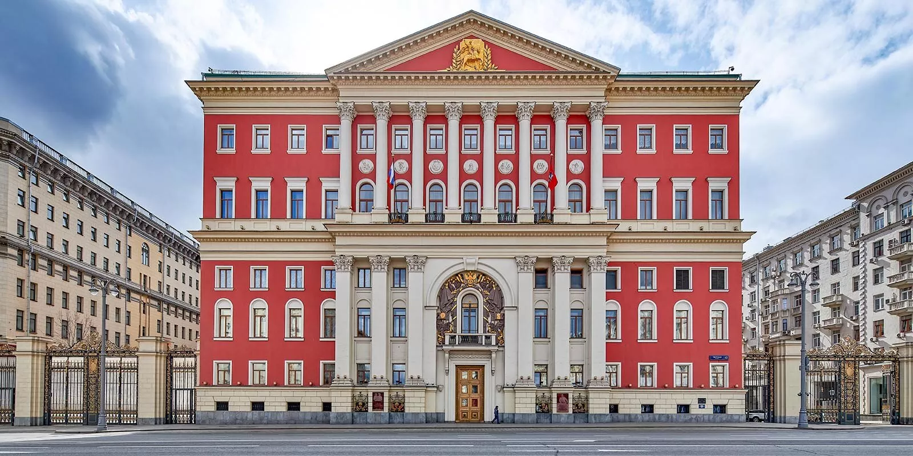

Правительство Москвы
Правительство Москвы
Правительство Москвы — орган государственной власти, возглавляющий систему органов исполнительной власти города Москвы, в которую входят отраслевые и функциональные органы исполнительной власти (департаменты, комитеты, главные управления, управления и инспекции), осуществляющие исполнительно-распорядительные функции в определённых отраслях и сферах управления городом, а также территориальные органы исполнительной власти для управления на местах — это префектуры административных округов и районные управы.
Возглавляет правительство мэр. Членами московского правительства также являются его заместители, руководитель Аппарата мэра и Правительства Москвы, министры Правительства Москвы и префекты административных округов города Москвы в ранге министров Правительства Москвы.
История возникновения
В Российской империи вплоть до 1918 года исполнительным органом городского самоуправления была Московская городская управа под руководством городского головы.
В советское время исполнительным органом являлся исполком Моссовета, фактически выполнявший решения горкома партии.
В 1991 году, ещё до распада СССР, впервые в РСФСР в Москве были избраны мэр и правительство, что послужило началом создания новой системы органов исполнительной власти города. Первое время Правительство Москвы и Мосгорисполком существовали параллельно, пока в сентябре 1991 года последний не был упразднён окончательно. Изначально должности мэра города и премьера правительства были разделены. После отставки Гавриила Попова их длительное время совмещал Юрий Лужков. 20 августа 2001 года должность премьера была официально упразднена, правительство стал возглавлять мэр.
Органы исполнительной власти города Москвы
Мэр Москвы
Высшим должностным лицом города Москвы является Мэр Москвы, избираемый на всеобщих выборах сроком на 5 лет. Напрямую мэру Москвы подчиняются:
- Департамент финансов города Москвы
- Аппарат Мэра и Правительства Москвы
- Пресс-служба Мэра и Правительства Москвы
- Главное контрольное управление города Москвы
- Комитет государственного строительного надзора города Москвы
- Государственная инспекция по контролю за использованием объектов недвижимости Москвы
- Департамент природопользования и охраны окружающей среды
- Объединение административно-технических инспекций города Москвы
Правительство Москвы
Высшим постоянно действующим коллегиальным органом исполнительной власти города Москвы является Правительство Москвы, которое обеспечивает координацию деятельности других органов исполнительной власти. Правительство возглавляет Мэр Москвы.
В Правительство Москвы входят Мэр Москвы, заместители Мэра Москвы в Правительстве Москвы, министры Правительства Москвы, которые назначаются и освобождаются от должности мэром.
Заместители мэра и министры правительства возглавляют и координируют работу остальных органов исполнительной власти, объединённые в Комплексы городского управления, созданные для координации деятельности и совершенствования структуры органов исполнительной власти города Москвы.
Аппарат Мэра и Правительства Москвы
- Департамент информационных технологий
- Департамент территориальных органов исполнительной власти
- Комитет общественных связей и молодёжной политики
- Управление делами Мэра и Правительства Москвы
- Департамент торговли и услуг
- Департамент культурного наследия
- Департамент культуры
- Департамент предпринимательства и инновационного развития
- Комитет по туризму
Комплекс городского хозяйства
- Департамент жилищно-коммунального хозяйства
- Департамент капитального ремонта
- Департамент по делам гражданской обороны, чрезвычайным ситуациям и пожарной безопасности
- Государственная жилищная инспекция
Комплекс региональной безопасности и информационной политики
- Департамент средств массовой информации и рекламы
- Департамент национальной политики и межрегиональных связей
- Департамент региональной безопасности и противодействия коррупции
- Департамент по обеспечению деятельности мировых судей
- Департамент внешнеэкономических и международных связей
Комплекс транспорта, промышленности и дорожно-транспортной инфраструктуры
- Департамент транспорта и развития дорожно-транспортной инфраструктуры
- Департамент инвестиционной и промышленной политики
- Московская административная дорожная инспекция
Комплекс социального развития
- Департамент здравоохранения
- Департамент образования и науки
- Департамент труда и социальной защиты населения
- Комитет ветеринарии
- Управление записи актов гражданского состояния
- Главное архивное управление
- Государственная инспекция по качеству сельскохозяйственной продукции, сырья и продовольствия
- Комитет государственных услуг
Комплекс экономической политики
- Департамент экономической политики и развития
- Департамент по конкурентной политике
Территориальные органы исполнительной власти
- Префектуры административных округов
- Управы районов